Du må bruke presentasjonsmodus/fullskjermsvisning for å lese denne, men du skal ikke bruke frem/tilbake-knappene, KUN knappene som dukker opp på sliden for å ta deg videre! Ofte må du laste filen ned til maskinen din og åpne den der for å få til dette. Merk at noen knapper vil åpne nettskjema, videoer eller andre ressurser i internettbrowseren din. Når du gjør det riktig, skal du kun se en side av gangen, og når du trykker på knappene som dukker opp på skjermen så skal disse ta deg frem/tilbake i dokumentet. Du vil miste mye læringsutbytte hvis du ser flere slides av gangen. Får du det ikke til, spør foreleser/gruppelærer!
Trykk denne knappen for å begynne
Dette er en erstatning for forelesningen i emnet. Har du gått skikkelig gjennom disse interaktive forelesningsnotatene så trenger du ikke å lese de fulle forelesningsnotatene i del 2d og del 2e (med unntak av oppgavene bak). All informasjonen du trenger, får du her. Du kommer til å få mange grublespørsmål og diskusjonsoppgaver, det er meningen at disse skal gjøres i grupper av minst 2, maks 4 studenter. Det er defor sterkt anbefalt at dere sitter sammen i grupper når dere går gjennom disse interaktive forelesningsnotatene, du vil få betydelig mer utbytte av dem på den måten. En god ide kan være å bli enige om å treffes til den faste forelesningstiden og bruke forelesningslokalet som kommer til å være resevert til dette. Hvis du har kommentarer ris/ros til disse forelesningsnotatene eller til emnet, trykk på 🙂 🙁 knappen som du finner på alle sider.
Trykk denne knappen for å begynne
HUSK at du får mer ut av de interaktive forelesningsnotatene når du gjør de sammen med noen. Diskusjonene med andre er svært viktige.
Det er mange spørsmål/grubliser underveis, sett dere selv en tidsgrense, 1-2 minutter på de korte, 4-5 minutter på de lenger. Ha en alarm ved siden av, ellers kommer dere til å bruke alt for langt tid. Har dere ikke fått det til etter 5 minutter, gå videre, se svaret og lær!
Er du i det minste tvil om noe, så finnes det nå en PADLETknapp, trykk det og still spørsmål med en gang mens du enda husker spørsmålet!
Trykk denne knappen for å begynne
Forrige side
Velkommen til forelesningen i del 2D og 2E! Denne forelesningen er dedikert til den fritt fallende observatøren. Denne kan være et romskip i motortrøbbel eller rett og slett en hel planet som jo faller fritt i tyngdefeltet til sola. Eller faktisk også en lysstråle! Vi skal se hvordan Einsteins tyngdelov endrer planetbaner og da spesielt Merkurs bane som er så nær solen at effekten av ß-geometrien er viktig. Og da må nok dessverre Kepler melde pass, ikke mer rene elliptiske baner!
Fremstillingen av generell relativitetsteori i AST2000 er basert på den fantastiske boken “Exploring black holes” av E. Taylor, J. Wheeler og E. Bertschinger, gratis tilgjengelig her. Anbefales på det sterkeste for den som er interessert. (Illustrasjon fra pngegg.com) Neste side
‘ Forrige side🙂 🙁IntroduksjonPADLET
Normalt kommer jeg frem til side 56 i en fysisk dobbelttime og tar resten på neste forelesning. Det bør du også gjøre!
Vi begynner som vanlig... ...med litt brainstorming. Som det er svært viktig at du gjør før du går videre.
Trykk her for å varme opp
Er du klar og har sendt inn skjemaet? Nei Ja
Nytt tema:
Relativistisk Euler
Forrige side🙂 🙁Relativistisk EulerPADLET
La oss begynne med å oppsummere noen av de viktigste sammenhengene vi har kommet frem til så langt:
Tidromsavstand i Schwarzschild-geometri: $$\Delta\tau^2=\Delta s^2=\sst\Delta t^2-\frac{\Delta r^2}{\sst}-r^2\Delta\phi^2$$
Energi i et tyngdefelt: $$\frac{E}{m}=\left(1-\frac{2M}{r}\right)\frac{\Delta t}{\Delta\tau}=\sqrt{1-\frac{2M}{r}}\frac{1}{\sqrt{1-v_\mathrm{sh}^2}}$$
Spinn i tyngdefelt: $$\frac{L}{m}=r^2 \frac{\Delta\phi}{\Delta\tau}$$
Sammenheng mellom avstand/tidsintervall målt av langt-vekkobservatør og avstand/tidsintervall målt av skallobservatør: $$\Delta r_\mathrm{sh}=\frac{\Delta r}{\sqrt{\sst}}\ \ \ \ \ \ \ \ \ \Delta t_\mathrm{sh}=\Delta t\sqrt{\sst}$$
Forrige side🙂 🙁Relativistisk EulerPADLET
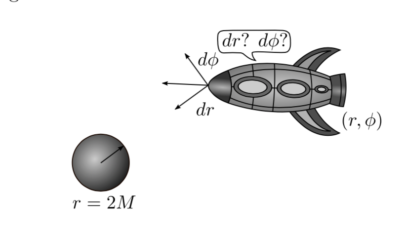
Romskipet ditt for motortrøbbel nær et sort hull og begynner å falle fritt. Du kjenner verdien for energien din per masse E/m og spinn per masse L/m og lurer på hva som nå kommer til å skje med romskipet ditt. Kan du simulere den videre banen til romskipet? Blir det slukt av det sorte hullet eller ikke? Hvordan kan vi simulere noe sånt? Euler sier du? Ja, kanskje det, men hvordan?
Forrige side🙂 🙁Relativistisk EulerPADLET
Tenk deg at vi lurer på hva ny r og θ-posisjon etter et tikk (tidsintervall) på romskipklokka (egentidsklokka) Δτ. Altså hva er forflytningen Δr og Δϕ etter en tid Δτ målt på romskipsklokka? Og hvor mye har langt-vekkklokka tikket i løpet av dette egentidsintervallet Δτ? Altså hvor langt tidsintervall Δt har det gått når det har gått et tidsintervall Δτ på egentidsklokka? Tenk deg litt om før du går videre for å få noen hint! Kan du tenke deg hvor du kunne starte?
Forrige side🙂 🙁Relativistisk EulerPADLET
Vi skal altså finne endringene Δt, Δϕ og Δr etter et egettidsintervall Δτ. La oss begynne med Δt, har du noe forslag?Tror det!Næææææææ...
Forrige side🙂 🙁Relativistisk EulerPADLET
La meg gi deg et hint: kan du bruke en av formlene på første side her???
Forrige side🙂 🙁Relativistisk EulerPADLET
Innebærer forslaget ditt et av formlene på første siden her?
Forrige side🙂 🙁Relativistisk EulerPADLET
Fikk du $$\Delta t=\frac{E/m}{1-\frac{2M}{r}}\Delta\tau$$ ????? Hvor fikk du det fra? Jo, det var jo...
Uttrykket for energi på førstesiden!
Forrige side🙂 🙁Relativistisk EulerPADLET
Hva med endringen i vinkel, Δϕ?? Kan du se hvordan den må oppdateres for et gitt egentidsintervall Δτ...? Jepp, jeg har uttrykket klart! Et hint kanskje?
Ta en kikk på den førstesiden med formler igjen!
Forrige side🙂 🙁Relativistisk EulerPADLET
Fikk du: $$\Delta\phi=\frac{L/m}{r^2}\Delta\tau$$ fra likningen for spinn? Husker du fra celestmekanikken? Fikk vi ikke der at h = r2ϕ̇ Vi husker at h var spinn per masse, altsa L/M og ϕ̇ var jo dϕ/dt eller Δϕ/Δt. Som forventet ser vi altså at ϕ-delen av bevegelseslikningen er lik som i klassisk mekanikk.
Forrige side🙂 🙁Relativistisk EulerPADLET
Hva så med Δr? Igjen trenger du noen av formlene på første siden, kanskje kombinert med noen av de vi har funnet nå. Klarer du å finne et uttrykk for Δr??
ikke trykk her før du har forsøkt!
Forrige side🙂 🙁Relativistisk EulerPADLET
Fikk du $$\Delta r=\pm\sqrt{\left(\frac{E}{m}\right)^2-\left\sst}\Delta\tau.$$ Hvis ikke, se denne videoen
. Merk at du her må angi om legemet er på vei innover eller utover, altså om endringen i Δr er positiv eller negativ.
Forrige side🙂 🙁Relativistisk EulerPADLET
Oppsummert har vi: $$\Delta t=\frac{E/m}{1-\frac{2M}{r}}\Delta\tau$$ $$\Delta\phi=\frac{L/m}{r^2}\Delta\tau$$ $$\Delta r=\pm\sqrt{\left(\frac{E}{m}\right)^2-\left\sst}\Delta\tau.$$ Dette er kun Euler for posisjon, men virker også for akselrasjoner som vi jo har under hele bevegelsen her. Men disse likningene tar ikke hensyn til retningsendringer, du må altså manuelt sjekke om den radielle hastigheten når 0 og dermed skifte fortegn på Δr i dette tilfellet (tenk f.eks i en ellipsebane så vil den radielle hastigheten endre fortegn i perihel og aphel når den radielle hastigheten blir null). Men disse likningene kan du simulere bevegelse i ß-tidrom numerisk, men nå skal vi se på noen analytiske fremgangsmåter for å kvalitativt forstå hvordan baner i sterke tyngdefelt kan se ut. Og dette leder oss til Nobelprisen i fysikk i 2020...
Forrige side🙂 🙁Relativistisk EulerPADLET
Men først skal vi se litt på lys i tyngdefeltet! For hva med lys??? Hvordan beveger lys seg i tyngdefeltet? En stor forskjell mellom Newtons og Einsteins tyngdelov er at i Einsteins generelle relativitetsteori er det energien som påvirker gravitasjon, ikke bare massen. Fotoner har energi selv om de ikke har masse og vil derfor både påvirke og bli påvirket av tidrommets krumning. Også lysets vei gjennom tidrommet blir påvirket av tidromskrumning i ß-tidrommet
Forrige side🙂 🙁Relativistisk EulerPADLET
Lys går med lyshastighet v = Δx/Δt = 1. Denne likningen gir oss Δx = Δt. Det gir oss videre Δτ2 = Δs2 = Δt2 − Δx2 = 0 Hvis Δτ = 0, kan vi vel ikke bruke uttrykkene våre for hvordan legemer beveger seg i tyngdefeltet?
Forrige side🙂 🙁Relativistisk EulerPADLET
Oppsummert har vi: $$\Delta t=\frac{E/m}{1-\frac{2M}{r}}\Delta\tau$$ $$\Delta\phi=\frac{L/m}{r^2}\Delta\tau$$ $$\Delta r=\pm\sqrt{\left(\frac{E}{m}\right)^2-\left\sst}\Delta\tau.$$ Vi kan altså ikke bruke disse uttrykkene for å se hvordan et foton vil bevege ser fremover i tid og rom og oppdatere sin Δr og Δϕ-posisjon siden Δτ alltid er 0 for fotoner! Kan du finne et alternativ? Hva ville du gjort hvis du vil finne liknende uttrykk for hvordan et foton (og dermed) lys beveger seg gjennom tid og rom?
Forrige side🙂 🙁Relativistisk EulerPADLET
Hvis vi ikke kan bruke egentid Δτ, kunne vi bruke langt-vekktid Δt?
Forrige side🙂 🙁Relativistisk EulerPADLET
Oppsummert har vi: $$\Delta t=\frac{E/m}{1-\frac{2M}{r}}\Delta\tau$$ $$\Delta\phi=\frac{L/m}{r^2}\Delta\tau$$ $$\Delta r=\pm\sqrt{\left(\frac{E}{m}\right)^2-\left\sst}\Delta\tau.$$ Ta en kikk på disse likningen! Kan du se hvordan du kan finne Euler-likningene for lys? Altså hvordan oppdatering Δr og Δϕ blir for en gitt Δt? Ikke gå videre før du har et forslag! Og husk at fotoner er masseløse, m = 0!
Forrige side🙂 🙁Relativistisk EulerPADLET
Fikk du $$\Delta r=\nonumber\pm \sst\sqrt{1-\sst\frac{(L/E)^2}{r^2}}\Delta t$$ $$r\Delta\phi=\pm\frac{L/E}{r}\sst\Delta t.$$ ??? Dette fikk jeg til, gå videre!
Kom ikke helt imål, hint?
Den øverste likningen på forrige side, den som gir Δt som funksjon av Δτ, kan du skrive om den til et uttrykk for Δτ? Og sette inn dette i de andre to likningene? Prøv igjen, og hvis du ikke får det til, se denne videoen
Forrige side🙂 🙁Relativistisk EulerPADLET
$$\Delta r=\nonumber\pm \sst\sqrt{1-\sst\frac{(L/E)^2}{r^2}}\Delta t$$ $$r\Delta\phi=\pm\frac{L/E}{r}\sst\Delta t.$$ Ser du at størrelsen spinn delt på energi for lyset går igjen her? Denne har en helt spesiell betydning som vi skal se nærmere på nå. Ser du at det er denne egenskapen og kun denne egenskapen ved lyset som avgjør lysets bevegelse i tyngdefeltet? Det er altså hverken lysets spinn alene eller lysets energi alene som avgjør bevegelsen, men forholdet mellom de to..
Forrige side🙂 🙁Relativistisk EulerPADLET
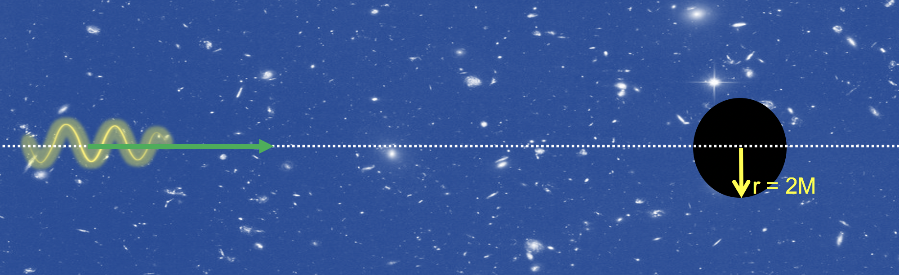
La oss ta et eksempel, vi har: $$\Delta r=\pm \sst\sqrt{1-\sst\frac{(L/E)^2}{r^2}}\Delta t$$ $$r\Delta\phi=\pm\frac{L/E}{r}\sst\Delta t.$$ Anta at langt-vekkobservatøren har sendt en lyssignal radielt rett innover mot det sorte hullet. Kan du bruke disse likningene til å se hvilken hastighet langt-vekkobservatøren måler for lyset i det øyeblikk lyset er på en avstand r fra det sorte hullet?
Forrige side🙂 🙁Relativistisk EulerPADLET
$$\Delta r=\pm \sst\sqrt{1-\sst\frac{(L/E)^2}{r^2}}\Delta t$$ Fikk du det til? Eller kanskje du ikke tror på svaret ditt? Et lite hint for sikkerhetsskyld?
Ok da! Lyset går kun radielt, så her er det kun radiellhastighet vr vi er interessert i! Og hva er radiell hastighet uttrykt ved Δr og Δt??
Nettopp!$v_r=\frac{\Delta r}{\Delta t}$ og den får du rett fra disse likningen. Men hva er spinnet L for denne lysstrålen? Jammen det er jo...
Ikke sant| Lysstrålen går jo radielt innover, så den har jo ikke noe spinn. Men hva blir lysfarta da? NEI, IKKE TALE OM!
Det blir jo $$v_r=-\sst$$ (merk minustegn siden lyset faller innover) Ikke tale om sa jeg! Du lurer ikke meg!
Ikke noe lureri her, lover!
Forrige side🙂 🙁Relativistisk EulerPADLET
$$v_r=\sst$$ Jo, faktisk! Lureriet var i del 2A og 2B da vi sa at lysets hastighet er den samme for alle observatører. Her ser vi at lengt-vekkobservatøren ikke måler en lyshastighet på 1. Men hvilken lysfart får vi når r nærmer seg eventhorisonten? SLUTT! Nå går du over streken!
Nettopp, ja, lysfarta går mot null ved eventhorisonten den også!. Vel og merke målt fra en langt-vekkobservatør!.
Forrige side🙂 🙁Relativistisk EulerPADLET
$$v_r=-\sst$$ Vi må gjøre en liten endring i Einsteins antakelse for å få ting til å stemme i generell relativitetsteori:
Lysfarta... ...er den samme i alle referansesystemer, så lenge den blir målt lokalt, dvs. at observatøren som måler hastigheten er nær lysstrålen når hastigheten måles. Altså: Lyshastigheten er den samme for alle lokale observatører.
Langt-vekkobservatøren er per def ikke en lokal observatør og vil dermed ikke måle at lys i gravitasjonsfeltet har lysfart. Vi ser at han måler at lyset hele tiden bremses i gravitasjonsfeltet. Men når lyset farer forbi en skall-observatør eller fritt fallende observatør og disse måler hastigheten til lyset i det det farer forbi, så vil de finne at vr = 1 fordi de måler lokalt, antar lokalt intertialsystem og bruker Lorentzgeometri. I Lorentzgeometri (uten tyngdefelt) har vi sett at lysfarta faktisk er den samme i alle referansesystemer!
Forrige side🙂 🙁Relativistisk EulerPADLET
$$\Delta r=\pm \sst\sqrt{1-\sst\frac{(L/E)^2}{r^2}}\Delta t$$ $$r\Delta\phi=\pm\frac{L/E}{r}\sst\Delta t.$$ I oppgave 2E.3 skal du se på tangensiell lysfart, altså lysfarta vϕ målt av langt-vekkobservatøren for lys som skallobservatøren sender ut parallellt med skallet sitt. Ved å se på formelene kan du kanskje allerede ane svaret? (hvis lyset går tangensielt så er vel Δr = 0, det gir deg kanskje L/E? Og utledet ikke vi tangensiell fart til å være vϕ = rϕ̇ i celestmekanikken? (dette var en utledning du bør kunne!)
Kaffe!
Litt kaffe før vi skal bruke uttrykket for lys videre! En tur ut i høststormene, få klarnet hjernen. Har du nå kommet deg over sjokket av at lysfarta faktisk ikke er den samme for alle observatører likevel?
Jeg har kommet meg, hodet er klart, sett igang!
Forrige side🙂 🙁Relativistisk EulerPADLET

Forholdet L/E er knyttet til et begrep som du kommer til å møte mange ganger i fysikken i årene som kommer: impaktparameter. Denne brukes i interaksjoner mellom legemer, partikler eller, her, lys med massivt legeme. Over ser du et eksempel med et sort hull med masse M og et foton som kommer inn fra venstre side med bevegelsersmengde p⃗. I denne figuren er fotonet og det sorte hullet veldig langt fra hverandre selv om det ikke ser slik ut i figuren. Når de er langt fra hverandre (dvs. de har enda ikke begynt å påvirke hverandres bevegelse) så skal du
tegne en rett lang linje som følger p⃗ og
tegne en annen linje parallell til den første som går gjennom sentrum av det sorte hullet,
avstanden mellom disse to paralelle linjene er impaktparameteren b.
Forrige side🙂 🙁Relativistisk EulerPADLET
Hang du med på beskrivelsen av hvordan du finner impaktparameteren? Vi tar det en gang til for sikkerhetsskyld: Når lyset er langt borte fra det sorte hullet, så skal du...
tegne en rett lang linje som følger p⃗ og
tegne en annen linje parallell til den første som går gjennom sentrum av det sorte hullet,
avstanden mellom disse to paralelle linjene er impaktparameteren b.
Er det klinkende klart?
Forrige side🙂 🙁Relativistisk EulerPADLET
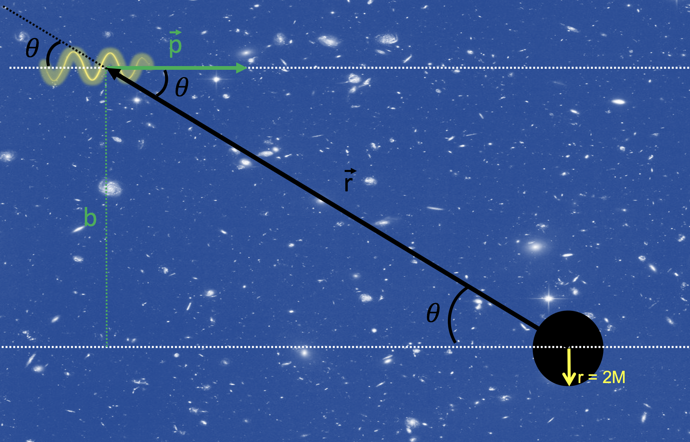
Posisjonsvektoren til fotonet er r⃗ og θ er vinkelen mellom linja som ligger i forlengelsen av r⃗ og linja som ligger i forlengelsen av p⃗. Kan du uttrykke absoluttverdien av spinnet L først med r⃗ og p⃗ og deretter skrive dette ut ved hjelp av p (absoluttverdi av bevegelsemengde) og b (impaktparameter)? Kan du så få inn energien E her til fotonet ved å bruke på en sammenheng mellom energi og bevegelsemengde (husk at fotoner har masse 0) som vi utledet i del 2B? Kommer du frem til en sammenheng mellom L/E og impaktparameteren?
Forrige side🙂 🙁Relativistisk EulerPADLET
Fikk du det til???
Forrige side🙂 🙁Relativistisk EulerPADLET
Fikk du $$b=\frac{L}{E}$$ Altså at faktoren $\frac{L}{E}$ som vi har i bevegelsesligningende for et foton er nettopp impaktparameteren! Merk at vi har sett bort fra fortegnet på spinnet her siden det uansett justeres med en ± i uttryket for Δϕ avhengig av bevegelsesretningen. Hvis du ikke kom frem, se på denne videoen
.
Forrige side🙂 🙁Relativistisk EulerPADLET
Setter vi inn får vi $$\begin{aligned}
\frac{dr}{dt}&=\pm\sst\sqrt{1-\sst\frac{b^2}{r^2}}\\
r\frac{d\phi}{dt}&=\pm\frac{b}{r}\sst.\end{aligned}$$ Merk at vi nå har gjort Δ-ene infinitesimalt små slik at de har blitt til d-er. Merk også at vi har rdϕ/dt på venstre side isteden for bare dϕ/dt, kan du se hvorfor? Njaaaa, kanskje.
Husker du at vi i celestmekanikken fant at tangensialhastighet er vϕ = rϕ̇? Ja, det er nettopp den du har på venstre side nederst! Og øverst har du radiell hastighet til lyset. Alt sett fra langt-vekkobservatøren selvfølgelig!
Forrige side🙂 🙁Relativistisk EulerPADLET
Oppsummert så har vi altså på differensialform (som fysiker, bytt gjerne ut d-ene med Δ-er for å få differensform):
For legemer med masse: $$\frac{dt}{d\tau}=\frac{E/m}{1-\frac{2M}{r}}$$
$$\frac{d\phi}{d\tau}=\frac{L/m}{r^2}$$
$$\frac{dr}{d\tau}=\pm\sqrt{\left(\frac{E}{m}\right)^2-\left\sst}$$ For lys: $$\begin{aligned}
\frac{dr}{dt}&=\pm\sst\sqrt{1-\sst\frac{b^2}{r^2}}\\
r\frac{d\phi}{dt}&=\pm\frac{b}{r}\sst.\end{aligned}$$
Nytt tema:
Kloss på skråplan
En tur tilbake til videregående...
Forrige side🙂 🙁Kloss på skråplanPADLET
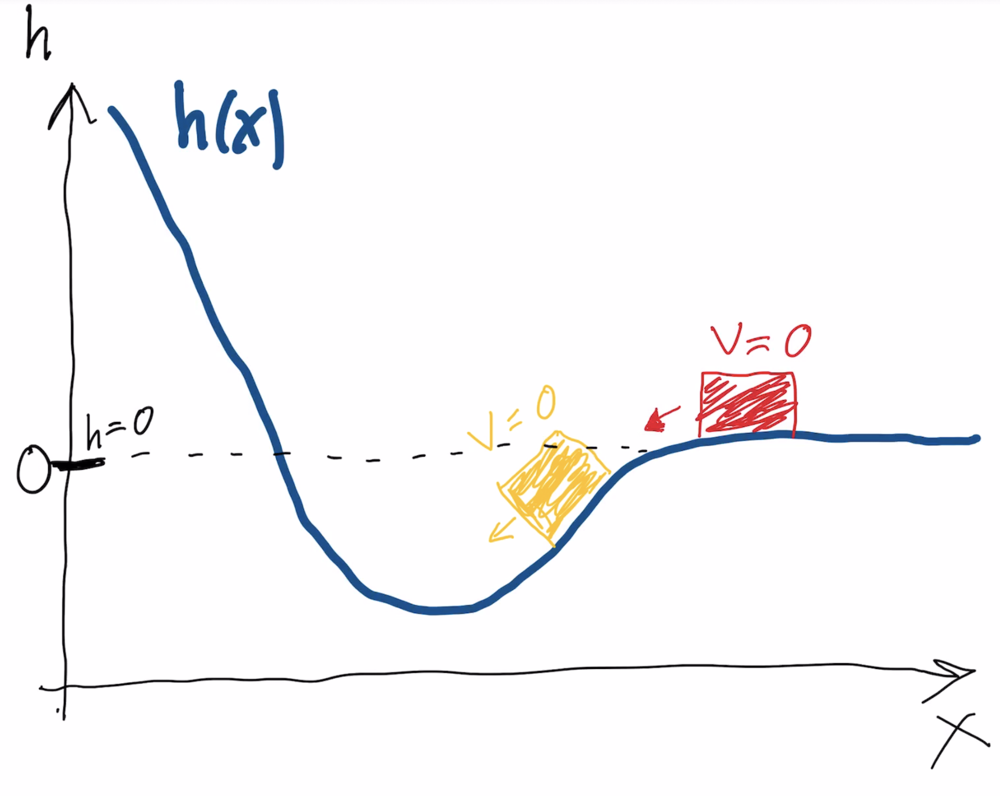
Vi ser en kloss på et friksjonsfritt skråplan, eller nærmere sagt, to klosser. Den røde har null hastighet og står akkurat slik at det begynner å vippe nedover. Den gule står allerede nede i dalen, også med null hastighet. Hva kommer til å skje videre med disse to klossene, og hvordan kom du frem til det?
Forrige side🙂 🙁Kloss på skråplanPADLET
Så hvor langt opp på den andre siden kommer hver av klossene? Og hva skjer når de kommer tilbake?
Forrige side🙂 🙁Kloss på skråplanPADLET
Det er vel energibetrakninger vi bruker her? Energien avgjør, ikke sant? $$E=\frac{1}{2}mv^2+mgh(x)$$ der v er farten til klossen, m er massen til klossen, g er tyngdeakselrasjonen og h(x) er høyden som funksjon av posisjon. MERK at høyden er definert til å være 0 der den røde klossen begynner. Vi definerer g til å være absoluttverdien av tyngdeakselrasjonen, altså positiv! Merk at vi kan definere 0-punktet for potensiell energi der hvor vi ønsker. Det normale er å definere den til å være 0 i det uendelige slik at den alltid er negativ men det er ikke nødvendig, fysikken vil bli den samme uansett hvor 0-punktet defineres. Her ser vi at vi har en høyde som kan være positiv eller negativ og dette avgjør om den potensielle energien er positiv eller negativ. 0-punktert for høyden definerer 0-punktet for potensiell energi.
Forrige side🙂 🙁Kloss på skråplanPADLET
$$E=\frac{1}{2}mv^2+mgh(x)$$ For den røde klossen kan vi finne energien i startpunktet: siden v = 0 og h(x) = 0 der så er E = 0. Klossen kommer til å skli ned i dalen, opp igjen på andre siden og vil til slutt nå v = 0 på andre siden. Men siden E = 0, så gir det oss fra likningen at den stopper ved h = 0 også på den andre siden, ENIG?
Forrige side🙂 🙁Kloss på skråplanPADLET
$$E=\frac{1}{2}mv^2+mgh(x)$$ Hva med den gule klossen? Siden v = 0 når h = h0 har den energi: E = mgh0 der h0 er høyden som den begynner på og som er negativ. Dermed er totalenergien i dette tilfellet negativ. Igjen så sklir klossen ned mot bunnen av dalen og opp på den andre siden, men hvis E = mgh0 så vil den ved v = 0 igjen nå høyden h0 for at energi skal være bevart. Men tenk deg nå at den røde klossen kommer inn med v > 0. Den klossen vil komme høyere opp enn h = 0 på den andre siden, og vil komme tilbake igjen og forsvinne ut til høyre med v > 0. Ser du hvorfor det må bli slik fra energibetraktninger?? Ikke gå videre før du her helt overbevist om at det er slik! Prøv deg frem med litt eksempler om du ønsker.
Forrige side🙂 🙁Kloss på skråplanPADLET
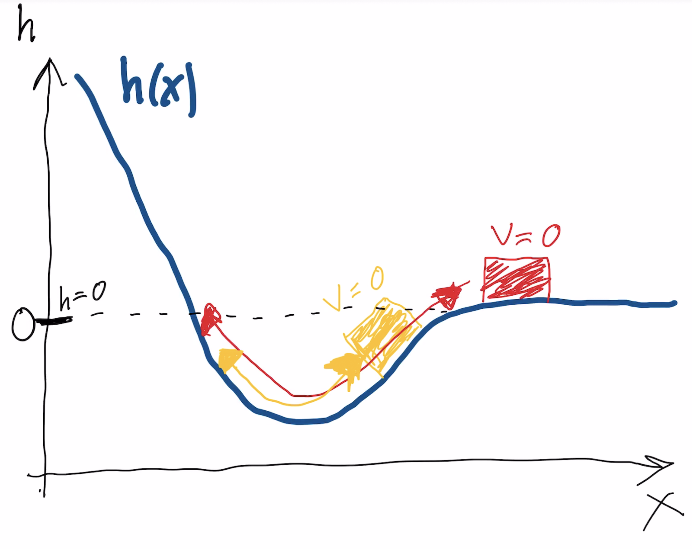
$$E=\frac{1}{2}mv^2+mgh(x)$$ Ser du dermed også at E = 0 er en grense for en slags unnslippingshastighet her? Hvis E < 0 så blir klossen fanget i dalen og svinger frem og tilbake mellom to ytterpunkter. Hvis derimot E > 0 så kommer klossen over h > 0 på den andre siden, og forsvinner deretter ut til høyre uten å komme tilbake.
Forrige side🙂 🙁Kloss på skråplanPADLET
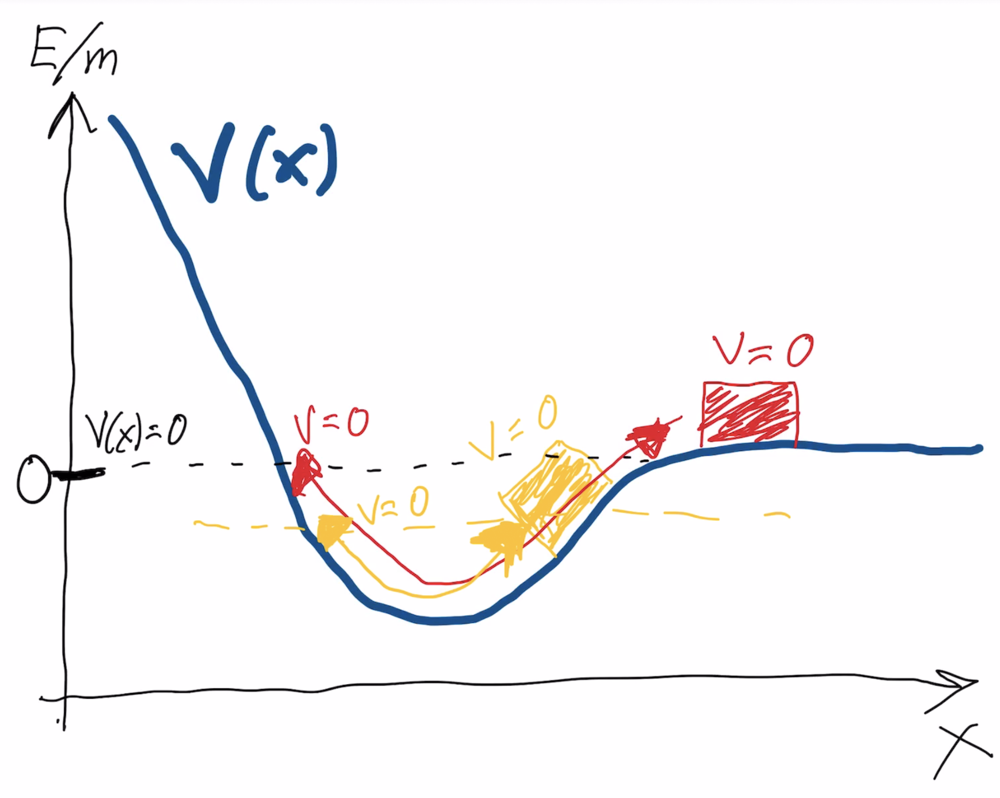
La oss nå skrive om uttrykket ved å dele på m på begge sider: $$\frac{E}{m}=\frac{1}{2}v^2+V(x)$$ der V(x) = gh(x) er tyngdepotensialet. Figuren viser nå det som før var bakken som potensialet V(x). Vi har altså et system som beveger seg i et potensial. Potensialet avgjør bevegelsen til legemet.
Forrige side🙂 🙁Kloss på skråplanPADLET
La oss nå ta dette enda litt videre og bare se rent matematisk på det. Ser du at vi kan skrive om $$\frac{E}{m}=\frac{1}{2}v^2+V(x)$$ til A = Bv2 + V(x) der A og B er konstanter? (A er jo energi per masse som er konstant, og B er bare 1/2).
Forrige side🙂 🙁Kloss på skråplanPADLET
A = Bv2 + V(x) Er du enig i at hvis vi har et hvilket som helst annet fysisk system der vi kan omforme bevegelseslikningene til denne formen med et potensial V(x) som likner litt på potensialet vi hadde, så er konklusjonene våre akkurat like gyldige for dette nye systemet? Fordi matematikken er nøyaktig den samme, og alle konklusjonene våre kom vi til ved å bruke det matematiske uttrykket. Det betyr at for et hvilket som helst fysisk system der A og B er konstanter (som kan være helt forskjellig fra de vi snakket om A trenger ikke engang å være energi) så kan dette problemet omformes til et tilsvarende kloss-på-skråplan-problem? Med konklusjonen:
Hvis konstanten A < 0 så vil legemet det er snakk om være bundet i et potensial og svinge frem og tilbake mellom to posisjoner
Hvis konstanten A > 0 så vil legemet det er snakk om ikke være bundet og kunne bevege seg uendelig langt bort.
Grensetilfellet mellom det to er A = 0
Nytt tema:
Effektivt potensial
En skikkelig strekk på bena nå! Legg deg gjerne på sofaen, sett vekkeklokka på 20 min, lukk øynene! På en normal fysisk dobbelttime kommer jeg omtrent til side 56. Anbefaler at du også stopper når du nå start kommer til side 56 og da venter til imorgen med resten av denne forelesningen. Gå på!
Forrige side🙂 🙁Effektivt potensialPADLET
Høres dette litt kjent ut? La oss se om vi kan finne et system som likner. Hva med to-legeme-problemet? La oss anta et lite legeme med masse m i gravitasjonsfeltet fra en planet eller stjerne med masse M. Da kan vi i det Newtonske tilfellet hvor vi antar at m ikke påvirker M skrive at... Ja, hvordan blir uttrykket for energi her?
Fikk du $$E=\frac{1}{2}mv^2-G\frac{mM}{r}$$ Hvis vi skriver om dette til $$\frac{E}{m}=\frac{1}{2}v^2+V(r)$$ så ser vi at potensialet V(r) = − GM/r ikke har en form som likner på skråplanet vi diskuterte tidligere. Men ellers så har vi samme form som likningen: A = Bv2 + V(x) Kan vi skrive om dette uttrykket så vi får et potensial som likner og dermed kan bruke skråplananalogien?
Tjaaaa......ikke helt rett frem det der nei...
Forrige side🙂 🙁Effektivt potensialPADLET
$$\frac{E}{m}=\frac{1}{2}v^2+V(r)$$ Vi vet at v er totalfarta. Men farta kan deles opp i en radiell og en tangensiell fart, husker du hvordan? Altså vi kan skrive v⃗ = vre⃗r + vθe⃗θ men hva er vr og vθ her? Uttrykk svaret med størrelsene r og θ og deres tidsderiverte. Dette bare må jeg få til, la meg tenke litt...
Fikk du... ja, jeg fikk...
v⃗ = ṙe⃗r + rθ̇e⃗θ og vet nøyaktig hvordan jeg kommer frem til dette. Hvis ikke så kikker jeg på Del 1B for å se hvordan man kom frem til det. Men kan du skrive vθ her ut med h som er spinn per masse?
Klart det, skal bare sjekke del 1B en gang til
Forrige side🙂 🙁Effektivt potensialPADLET
Det var jo slik at h som er spinn per masse jo kan skrives (fra definisjonen av spinn) som h = |r⃗×v⃗| = rvθ Altså får vi at vθ = h/r! Kan du nå sette inn for vr og vθ i $$\frac{E}{m}=\frac{1}{2}v^2-G\frac{M}{r}$$ og komme frem til A = Bvr2 + V(r) der $$V(r)=\left$$ og vr er den radielle hastighetskomponenten ṙ. Prøv selv, dette skulle være rett frem nå!
Forrige side🙂 🙁Effektivt potensialPADLET
Vi kom altså til at $$A=Bv_r^2+V_\mathrm{eff}(r)\ \ \ \ \ \ \ V_\mathrm{eff}(r)=\left$$ Hvis du ikke fikk det til, ta en titt på denne videoen
. Dette potensialet ser nøyaktig ut som skråplanet vårt fra tidligere. Ser du at når r → ∞ så går V(r) → 0 akkurat som før. Vi ser at vi her kun ser på r-komponenten av bevegelsen, alt som har med ϕ-bevegelsen å gjøre har blitt borte!. Men kan du nå tolke dette? For en planet som er bundet har vi E < 0. Det tilsvarer klossen som svinger frem og tilbake. Hva betyr klossen som svinger frem og tilbake mellom to ytterpunkter her? Merk at potensialet V(r) her ikke er det virkelige tyngdepotensialet, det er potensialet vi ville hatt, dersom dette var likningen for en kloss på skråplan. Vi kaller dette for det effektive potensialet for klossen på skråplan, altså potensialet i det analoge fysiske systemet! Det er ikke det reelle potensialet for det faktiske systemet vi ser på. Vi kommer iblant til å markere potensialet med “eff” for å klargjøre dette, men ikke alltid da det som regel vil være klart fra konteksten at det er snakk om effektivt potensial.
Forrige side🙂 🙁Effektivt potensialPADLET
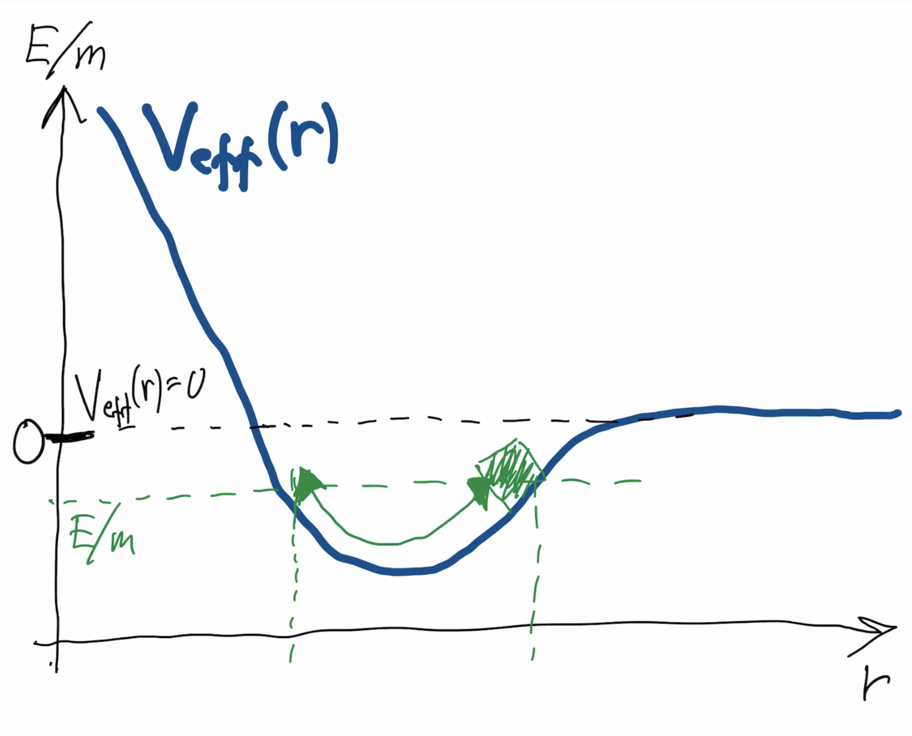
Planeten følger liningen for kloss på et skråplan, A = Bv2 + V(x) der skråplanet er gitt ved $$V_\mathrm{eff}(r)=\left$$ og tilsvarer figuren over.
Forrige side🙂 🙁Effektivt potensialPADLET
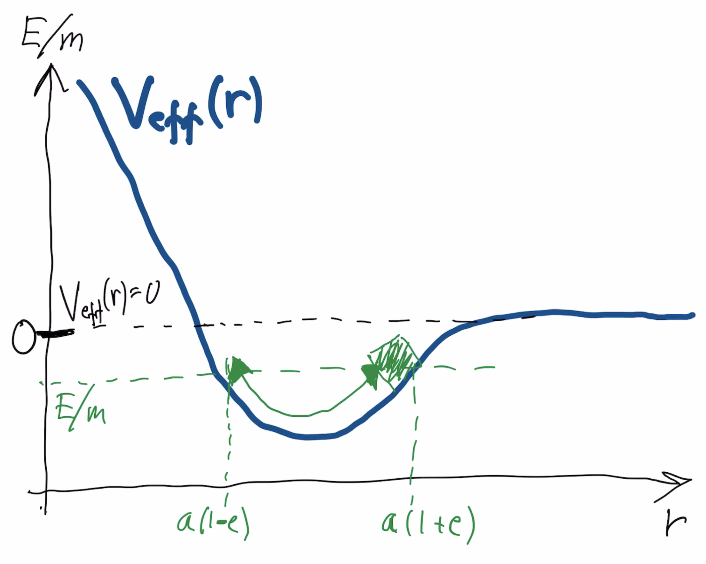
En bundet planet med E < 0 svinger altså frem og tilbake nede i dalen. Hva svinger? Jo det vi ser på i likningen er jo r-posisjonen til planeten. Det er jo den som V(r) avhenger av (på samme måte som det var x-posisjonen for klossen). Planeten svinger frem og tilbake mellom to r-posisjoner, en som er nærmere r = 0 og en som er lenger vekk fra r = 0. Er ikke de to ytterpunktene aphel og perihel?.
Forrige side🙂 🙁Effektivt potensialPADLET
$$A=Bv_r^2+V_\mathrm{eff}(r)\ \ \ \ \ \ \ V_\mathrm{eff}(r)=\left$$ Vi ser altså hvordan planetens r-posisjon, altså avstand fra sentrum r = 0, forandrer seg med tida uten å se på ϕ-bevegelsen. Vi ser på r-komponenten av ellipsebanen!. Ellipsebanen er jo akkurat en slik svingning mellom aphel og perihel, frem og tilbake, på samme måte som klossen!
Forrige side🙂 🙁Effektivt potensialPADLET
$$A=Bv_r^2+V(r)\ \ \ \ \ \ \ V_\mathrm{eff}(r)=\left$$ Og når E > 0, ja da vet vi at vi har hyperbelbane, planeten kommer inn til et perihel og forsvinner så ut og kommer aldri tilbake. Nøyaktig som klossen, den kommer inn, ned i dalen, opp på andre siden til den nærmeste r-verdien bestemt av energien, og forsvinner så ut til høyre!. Vi har altså sett hvordan vi kan omforme uttrykket for energi til likningen for kloss på et skråplan for r-bevegelsen og fra dette tolke hvordan banene ser ut. Fordelen med dette er at regningen er enkel, vi kan få mye informasjon om banen selv om vi ikke får den nøyaktige ϕ-bevegelsen. Vi skal derfor bruke nøyaktig denne fremgangsmåten for å se på baner i et sterkt tyngdefelt rundt et sort hull.
Forrige side🙂 🙁Effektivt potensialPADLET
La oss se igjen på bevegelseslikningene for et legeme i et sterkt tyngdefelt: $$\frac{dt}{d\tau}=\frac{E/m}{1-\frac{2M}{r}}$$ $$\frac{d\phi}{d\tau}=\frac{L/m}{r^2}$$ $$\frac{dr}{d\tau}=\pm\sqrt{\left(\frac{E}{m}\right)^2-\left\sst}$$ Kan du på noen måte se hvordan du kunne omforme dette til en kloss på et skråplan: A = Bv2 + V(x) eller kanskje heller noe alla det vi fikk i det Newtonske tilfeller: A = Bvr2 + Veff(r) der vr kan være dr/dτ.
Forrige side🙂 🙁Effektivt potensialPADLET
Fikk du det til? Hvis ikke gi det et par forsøk til! Et lite hint kan du få!
Du trenger kun $$\frac{dr}{d\tau}=\pm\sqrt{\left(\frac{E}{m}\right)^2-\left\sst}$$
Forrige side🙂 🙁Effektivt potensialPADLET
Hvis vi opphøyer i annen potens $$\left(\frac{dr}{d\tau}\right)^2=\left(\frac{E}{m}\right)^2-\left\sst$$ og flytter litt rundt på leddene $$\left(\frac{E}{m}\right)^2=\left(\frac{dr}{d\tau}\right)^2+\left\sst$$ har formen A = Bvr2 + V(r) der vr = dr/dτ og A er (E/m)2 (merk i annen potens her, men det er helt ok, så lenge A er en konstant størrelse, kan det være hva som helst! Men da definerer vi potensialet med rottegn slik at potensial beholder enheter E/m) og B = 1 mens farta her er r-farta med hensyn på egentiden. Og potensialet er $$V_\mathrm{eff}(r)=\sqrt{\left\sst}$$
Forrige side🙂 🙁Effektivt potensialPADLET
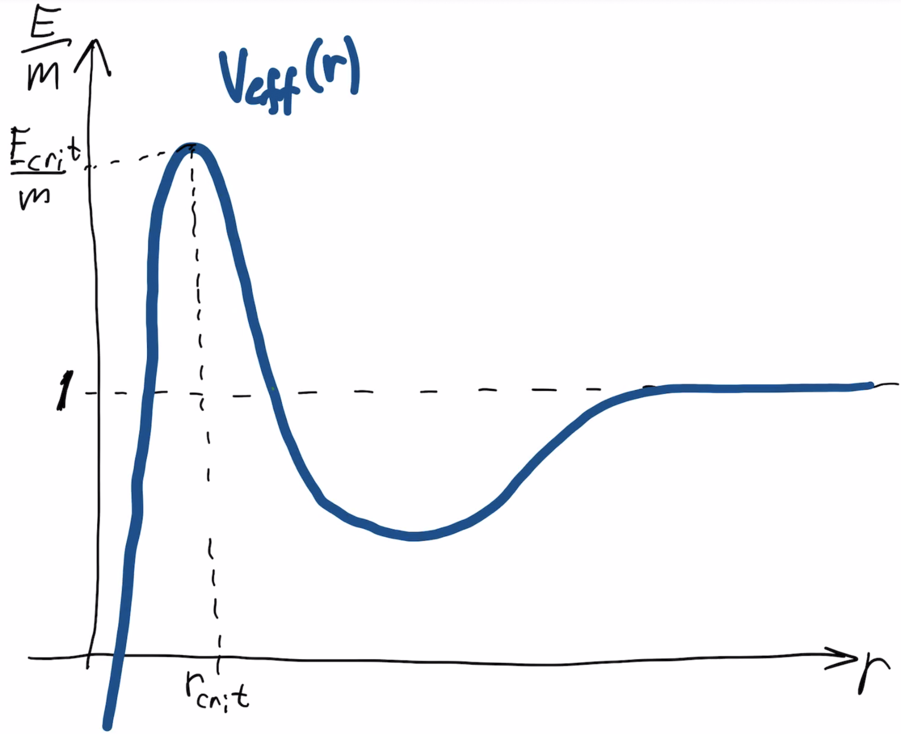
Her ser du det relativistiske potensialet: $$V_\mathrm{eff}(r)=\sqrt{\left\sst}$$ Ser du minst to radikale forskjeller med Newtons potensial?
Ikke trykk her før du har funnet minst en forskjell, helst to!
Forrige side🙂 🙁Effektivt potensialPADLET
Forskjellene er... ...jeg har det...
For det første at det nye skråplanet vårt ikke fortsetter uendelig høyt opp når r → 0. Det har en topp og forsvinner så NEDOVER. Den var tydelig ja, men den andre forskjellen...
Er at potensialet flater ut når V(r) = 1 og ikke når V(r) = 0 slik som før! Det betyr at det er E/m = 1 som er grenseverdien som avgjør om legemet blir bundet eller ikke, og ikke E/m = 0 som før. Men kan du tolke dette siste??? Hva betyr det fysisk at grensen nå går ved E/m = 1?? Dette vet du, du må bare tenke deg om et øyeblikk!
Forrige side🙂 🙁Effektivt potensialPADLET
Når E = 0 i klassisk fysikk så betyr det at $$E=\frac{1}{2}mv^2-G\frac{mM}{r}=0$$ Men hvis dette er oppfylt, hva blir da E/m i relativitetsteorien?? Der har vi jo et annet uttrykk for E/m! Aha, tror jeg ser det!
For svake tyngdefelt og lave hastigheter fant vi jo i del 2C at $$E\approx\frac{1}{2}mv^2-G\frac{mM}{r}\mathbf{+mc^2}$$ (bruker nå SI-enheter!). At klassisk E/m = 0 betyr jo at de første to leddene er 0, og da er E = mc2 for relativistisk energi. Men med relativistiske enheter så betyr det at E/m = 1! Altså hvileenergi!. Det at E/m = 1 er grensen i det relativistiske tilfellet betyr altså at grensen mellom om legemet er bundet eller ikke går ved energien som tilsvarer at legemet har kun hvileenergi. Når den klassiske Netwonske totalenergien er 0, så har legemet enda hvileenergi i relativistisk fysikk!
Forrige side🙂 🙁Effektivt potensialPADLET
$$V_\mathrm{eff}(r)=\sqrt{\left\sst}$$ Men hva betyr så denne toppen??? Husk at likningen har blitt omformet til en kloss på et skråplan, disse to fysiske problemstillingene har nøyaktig samme løsninger siden de matematiske likningene er identiske! Vi kan altså se på hva som skjer med klossen for å vite hva som skjer med en planet eller annet objekt i et sterkt tyngdefelt.
Forrige side🙂 🙁Effektivt potensialPADLET
Hvis vi bruker klossen så kan vi altså konkludere at:
Hvis konstanten E/m < 1 så vil legemet det er snakk om være bundet i et potensial og svinge frem og tilbake mellom to posisjoner
Hvis konstanten E/m > V(rcrit), altså potensialet i den r-verdien der potensialet har en topp (kritisk radius), så vil klossen komme seg over toppen og falle ned mot r = 0.
Hvis konstanten E/m > 1 men samtidig E/m mindre enn den kritiske energien Ecrit/m = V(rcrit) så vil legemet det er snakk om ikke være bundet men heller ikke gå over bakketoppen, det vil oppføre seg som når E/m > 0 i det klassiske tilfellet, det kommer inn, går et stykke opp bakken, og går så tilbake igjen for å forsvinne ut i det uendelige.
For E/m = V(rcrit) så ser vi at klossen blir liggende stille på r = rcrit, som tilsvarer en sirkelbane, men en veldig ustabil en, det skal lite til for at klossen faller ned på en av sidene! Samme gjelder for legemet i tyngdefeltet, noen støvpartikler eller til og med lysstråler er nok til å dytte det ut av den ustabile banen.
Forrige side🙂 🙁Effektivt potensialPADLET
Det som sto på forrige side er så essensielt at vi repeterer det en gang til her:
Hvis konstanten E/m < 1 så vil legemet det er snakk om være bundet i et potensial og svinge frem og tilbake mellom to posisjoner
Hvis konstanten E/m > V(rcrit), altså potensialet i den r-verdien der potensialet har en topp (kritisk radius), så vil klossen komme seg over toppen og falle ned mot r = 0.
Hvis konstanten E/m > 1 men samtidig E/m mindre enn den kritiske energien Ecrit/m = V(rcrit) så vil legemet det er snakk om ikke være bundet men heller ikke gå over bakketoppen, det vil oppføre seg som når E/m > 0 i det klassiske tilfellet, det kommer inn, går et stykke opp bakken, og går så tilbake igjen for å forsvinne ut i det uendelige.
For E/m = V(rcrit) så ser vi at klossen blir liggende stille på r = rcrit, som tilsvarer en sirkelbane, men en veldig ustabil en, det skal lite til for at klossen faller ned på en av sidene! Samme gjelder for legemet i tyngdefeltet, noen støvpartikler eller til og med lysstråler er nok til å dytte det ut av den ustabile banen.
Det som er viktig her er at du forstår hva hvert punkt her har å si for selve banebevegelsen, kan du tolke klossens bevegelse som banebevegelse? Hvis ikke, så må du spørre!
Kaffe!
Her bør du egentlig stoppe for idag! Skulle du være ekstra opplagt, så sleng innpå en kaffe så du blir enda mer opplagt og kan fortsette, men anbefaler i alle tilfelle å vente til imorgen med resten! (og så kan du jo ta kaffen likevel da, er lov det)
På’n igjen!
Forrige side🙂 🙁Effektivt potensialPADLET
Synes du det er overraskende at legemet må ha stor nok energi altså energi større enn Ecrit for å kunne bli slukt av det sort hullet? Joa, litt rart er det vel!
Årsaken kan enkelt sies av hvis energien er lav så vil spinnet dra legemet rundt det sorte hullet og sende det ut igjen (hvis E/m > 1) men hvis energien er høy nok til å overvinne effekten av spinnet, så kan det komme innenfor rcrit.
Forrige side🙂 🙁Effektivt potensialPADLET
Vi ser altså at hvis energien er for stor, så blir objektet slukt av det sorte hullet. Og hvis den er stor men hverken for stor eller mindre enn 1 så får vi noe som likner på hyperbelbane i klassisk fysikk. Og hvis E/m < 1, ja da har vi en bundet bane som kan likne på ellipsebane da vi ser at legemet jo i r-retning vil svinge frem og tilbake mellom et aphel og et perihel, men vi skal snart se at det ikke er nøyaktig en ellipsebane!.
Forrige side🙂 🙁Effektivt potensialPADLET
Men la oss først gjøre oss litt kjent med uttrykket. $$V_\mathrm{eff}(r)=\sqrt{\left\sst}$$ Uten å gjøre noe regning, har du noen formening om hva r-verdien for toppen av potensialet er??? Altså ved hvilken verdi for rcrit er toppen i potensialet V(r) slik at hvis klossen/legemet kommer over denne toppen vil legemet falle ned “bakken” og inn i det sorte hullet?
rcrit = Mrcrit = 2Mrcrit = 3MIngen aning!
Forrige side🙂 🙁Effektivt potensialPADLET
HAH! Lurte deg! Svaret er NEI, r > 2M!!! Kan du tenke deg hvorfor?
Forrige side🙂 🙁Effektivt potensialPADLET
Hvordan kom du frem til det? Det er galt...
Forrige side🙂 🙁Effektivt potensialPADLET
“Ingen aning” var det aller riktigste svaret her! Men hvorfor i allverden er det ikke r = 2M??? Er det ikke det som er eventhorisonten? Der man ikke lenger kan komme ut når man har kommet på innsiden??? Du skal i ukeoppgavene utlede verdien for rcrit, men som du kanskje ser av uttrykket for V(r), så må svaret avhenge av L/m!! Men uansett hva L/m er, så er rcrit > 2M, men hvorfor er det ikke r = 2M som vi har lært er hendelsehorisonten? Det snakkes nemlig her om noe litt annet! Det er helt riktig at r = 2M er hendelsehorisonten, kommer du innenfor der kommer du aldri ut igjen. Men rcrit betyr noe annet, hva???
Forrige side🙂 🙁Effektivt potensialPADLET
Husk at vi nå ser på et legeme i fritt fall! Da er du fortapt hvis du kommer på innsiden av rcrit! Men hvis du nå etter å ha kommet på innsiden av rcrit plutselig få startet motorene i romfartøyet ditt igjen, og du enda er utenfor r = 2M, ja da kan du redde deg siden du da ikke lenger er fritt fallende og uttrykkene vi har utledet ikke lenger er gyldige! Men hvis du hadde kommet innenfor r = 2M, da hadde du ikke kunnet komme deg ut, selv med motorkraft!
Forrige side🙂 🙁Effektivt potensialPADLET
La oss gå tilbake til eksemplet i 2C med legemet som faller fritt og radielt mot et sort hull. Det startet uendelig langt borte med v = 0, altså E/m = 1 og så begynte det sakte men sikkert å akselerere radielt innover. For langt-vekkobservatøren akselererte det først og så begynte det å bremse ettersom det nærmet seg hendelsehorisonten og ble til slutt stående helt stille på r = 2M. For lokale skallobservatører derimot så akslererte legemet hele tiden og den lokalt observerte farta, målt av skallobservatører ettersom legemet farte forbi, gikk mot lysfarta ettersom legemet nærmet seg hendelsehorisonten. MEN så,
etter at legemet passerer r = 2M (noe det aldri gjør for en langt-vekkobservatør) så har det ikke lenger mening å bruke langt-vekkobservatøren, da han ikke vil kunne se hva som skjer på innsiden og også fordi legemet da aldri passerer r = 2M for denne observatøren. Hastighetmålet dr/dt som måles med skallobservatørens lengde- og tidsmål kan dermed ikke brukes.
vi så også at det ikke kan eksistere skallobservatører innenfor hendelsehorisonten ettersom det er umulig å holde konstant r der, alt driver inn mot r = 0 på samme måte som man driver fremover i tiden. Vi kan altså ikke måle legemets fart med skallobservatører.
Men hvis vi ikke har et meningsfullt mål på legemets fart for r < 2M, finnes det likevel noen måte vi kan finne ut hvor lang tid legemet bruker på å falle fra r = 2M til det blir slukt i r = 0, målt på legemets egen klokke, egentiden? Dvs, hvis du faller inn, fra du passerer r = 2M til du er borte, hvor lang tid har du på deg, målt på din egen klokke?
Forrige side🙂 🙁Effektivt potensialPADLET
Kan vi bruke bevegelselikningen vår til å finne ut det? $$\left(\frac{E}{m}\right)^2=\left(\frac{dr}{d\tau}\right)^2+\left\sst$$
Her har vi forflytning dr, og vi vet at vi skal forflytte oss fra r = 2M til r = 0
Vi har også et tidsintervall Δτ som måler egentiden
Hva er L/m for dette legemet som faller radielt innover?
Kan du skrive om dette uttrykket her til et integral som kan integreres fra r = 2M til r = 0 og dermed finne total egentid τ?
La oss bruke det sorte hullet i sentrum av Melkeveien. Massen er ca. 4 millioner solmasser. Hvor langt fra sentrum er hendelsehorisonten? Skriv svaret i km.
Se om du kan finne tiden det tar på din klokke å falle inn!
Forrige side🙂 🙁Effektivt potensialPADLET
Fikk du ca. 26 sekunder? Hvis ikke, se på denne videoen
.
Forrige side🙂 🙁Effektivt potensialPADLET
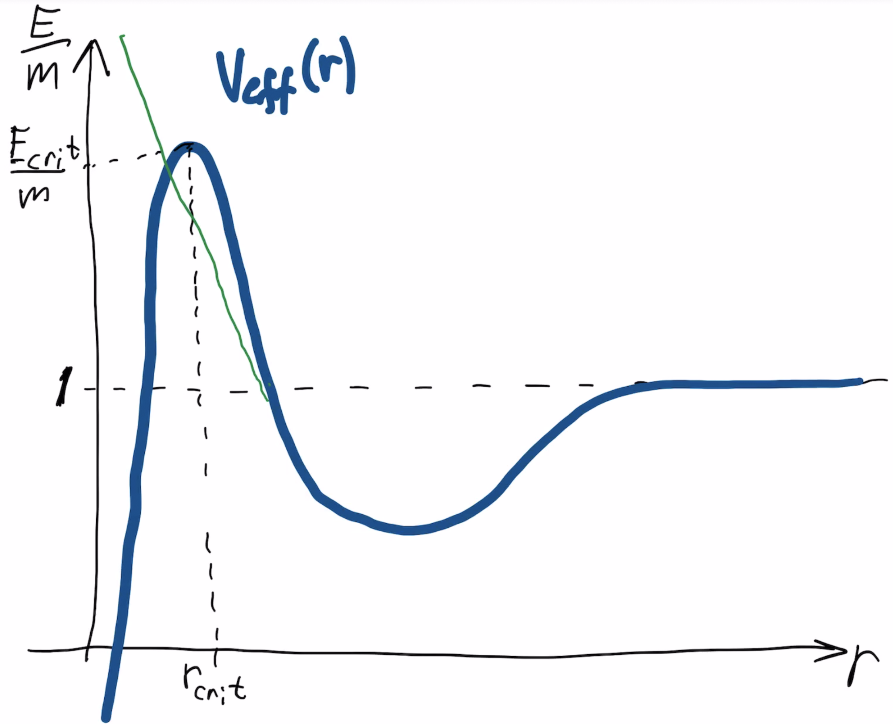
Lurer du på hvordan planetbanene blir i relativitetsteorien? Spesielt Merkur har et tydelig avvik fra Keplers lover siden den er så nær sola at den blir påvirket av et tyngdefelt så sterkt at avvikene fra Newtons lov blir merkbare. I figuren over har jeg tegnet i grønt det Newtonske potensialet i tillegg til det relativistiske. Merkur er langt unna toppen, men forskjellen i potensialet her vil likevel endre ting, kan du gjette hva det kan være? Neste side
Forrige side🙂 🙁Effektivt potensialPADLET
I denne videoen
diskutere jeg hvordan Merkurs bane blir seende ut basert på det vi vet om potensialet V(r).
Forrige side🙂 🙁Effektivt potensialPADLET
Effekten som såvidt er synlig i Merkurs bane vil være veldig synlig for stjerner i bane nær hendelsehorisonten i et sort hull. I sentrum av Melkeveien er det et sort hull med masse nær 4 millioner solmasser. Flere stjerner går i bane rundt dette hullet på omkring 1000 ß-radiers avstand. Nobelprisen 2020 gikk blant annet til arbeid med studiet av disse stjernebanene. En kort artikkel med video av 20 års observasjoner av stjerner nær Melkeveiens gigantiske sorte hull kan du finne hos Nature.
Nytt tema:
Lys
La oss se hvordan lys oppfører seg rundt et tyngdefelt...
Forrige side🙂 🙁LysPADLET
Hva så med lys? Kan de også følge baner nå som de også blir påvirket av gravitasjon?
Forrige side🙂 🙁LysPADLET
Kan vi skrive bevegelseslikningen for lys på samme måte: A = Bv2 + V(x) ???
Forrige side🙂 🙁LysPADLET
La oss gjøre et forsøk da! Vi hadde for lys at $$\frac{dr}{dt}=\pm\sst\sqrt{1-\sst\frac{b^2}{r^2}}$$ Hva med å gjøre om til skallkoordinater? Det viser seg at det blir lettere slik, så her setter vi igang...
Forrige side🙂 🙁LysPADLET
Vi vil altså finne den radielle komponenten drsh/dtsh av lyshastigheten observert lokalt av en skallobservatør på en gitt skall r mens lyset farer forbi. MERK at for en skallobservatør som bruker lokalt inertialsystem så er lysfarta alltid v = 1, men det er kun den radielle komponenten vi ser på her!. Så hvordan kan vi gå fra dt/dr til drsh/dtsh? (HINT: et godt gammelt triks som du lærte i 2C)
Forrige side🙂 🙁LysPADLET
Husker du sammenhengen (det bør du!) mellom langt-vekk og skall-koordinater? Jaaaaaa....joda.....vel...
På diffensialform (altså med d-er istedenfor Δ): $$dr_\mathrm{sh}=\frac{dr}{\sqrt{\sst}}$$ $$dt_\mathrm{sh}=\sqrt{\sst}dt$$ Insatt i $$\frac{dr}{dt}=\pm\sst\sqrt{1-\sst\frac{b^2}{r^2}}$$
Forrige side🙂 🙁LysPADLET
A = Bvr, sh2 + Veff(r)2, hvor A = B = 1/b2 og vr, sh er hastighet målt av skallobservatøren, vr, shdrsh/dtsh. Fikk du det til? Det er en ukeoppgave å vise dette samt at vi da får: $$V_\mathrm{eff}(r)=\frac{1}{r}\sqrt{\sst}.$$ Men hvordan blir formen på dette “skråplanet?”
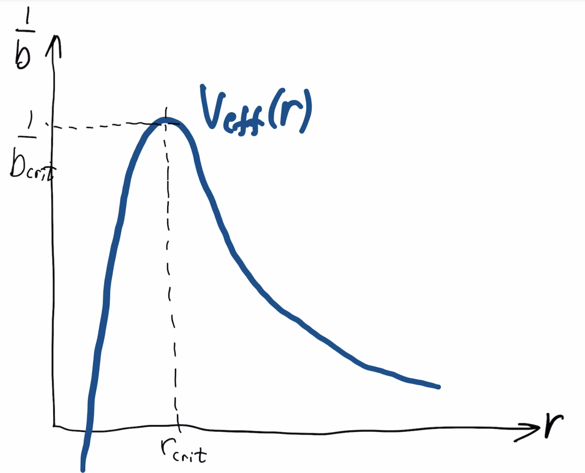
Her ser du formen på $$V_\mathrm{eff}(r)=\frac{1}{r}\sqrt{\sst}.$$
Fra likningen $$\frac{1}{b^2}=\frac{1}{b^2}v_\mathrm{r,sh}^2+V_\mathrm{eff}(r)^2,$$ ser vi nå at det er 1/b2 som er konstanten på venstre side, og ikke energi. Dermed blir også enhetene på det effektive potensialet det samme som 1/b2, men vi tar igjen roten slik at potensialet har enheter som 1/b. Det er dermed ikke lenger energi som avgjør lysets bane men verdien til 1/b. Vi ser at vi har en topp på samme måte som for massive legemer som avgjør om lyset blir “slukt” av det sorte hullet eller ikke. Men det er nå ikke om det har en kritisk energi E > Ecrit som avgjør om det blir slukt men heller om det har en impaktparameter slik at $$\frac{1}{b}>\frac{1}{b_\mathrm{crit}}$$
Bruk plottet av potensialet til å avgjøre om lys kan gå i stabile baner rundt en stjerne eller et sort hull! Jeg ser tydelig fra figuren at lys kan ha stabile baner!
TULL, det går ikke an for lys å ha stabile baner!
Forrige side🙂 🙁LysPADLET
Hmmmm....hvis du går tilbake til figuren for potensialet for massive legemer, hvordan var en banebevegelse i det potensialet? Hva betydde banebevegelse der? Dette må du forstå, spør hvis du ikke gjør det!
Forrige side🙂 🙁LysPADLET
Det er helt riktig. Se gjerne denne videoen
hvis du har tvil om hvorfor vi ikke kan få stabile baner. Merk også at vi kan få en ustabil bane, akkurat som vi snakket om for massive legemer: Hvis impaktparameteren akkurat svarer til topp-punktet. I en av ukeoppgavene skal du finne også dette topp-punktet og finne at det skjer ved rcrit = 3M. Dette punktet gir også opphav til et rart fenomen som kalles lyssfæren.
Et sort hull mottar jo lysstråler fra alle mulige retninger i hele universet, fra alle stjerner, galakser, gass-skyer som ligger rundt, nær og fjern. En god del av disse vil nødvendigvis ha lys som kommer inn med en vinkel som akkurat tilsvarer en impaktparameter bcrit. Dermed vil et sort hull hele tiden ha lys som går noen runder i sirkelbane ved rcrit = 3M før det går ut av banen, enten innover eller utover (blir vippet av bakketoppen på skråplanet). Dvs. at på kuleskallet som utgjøres av rcrit = 3M, den såkalte lyssfæren er det hele tiden lys i bane i forskjellige retninger. Hvis det skulle være en planet som går i bane rundt det sorte hullet på nøyaktig rcrit = 3M, hva ville du se når du ser opp på nattehimmelen?
Forrige side🙂 🙁LysPADLET
Ville du ikke se en stor ring på himmelen som går fra nordpolen til sydpolen? Tenk deg området der lyssfæren krysser planetens overflate. Det blir en ring rundt planeten. Akkurat noe slikt ville du sett på himmelen rett over der du tegner inn ringen på planeten. Lyspartikler som går i bane på lyssfæren vil bli stoppet på planeten.
Det at lys blir avbøyd i tyngdefelt gir også opphav til gravitasjonslinsing. Ønsker du å vite mer om det kan du lese om det i forelesningsnotatene for del 2E, den delen som ikke er pensum.
(Bilde: NASA, ESA, HST) Her ser du et bilde tatt av Hubble-teleskopet. Buene er lys fra fjerne objekter bak galaksene som du ser foran. Lyset fra de fjerne objektene har blitt avbøyd og gir opphav til disse buene. Formen på disse kan brukes til å kartlegge massefordelingen rundt galaksene ettersom massen til denne avgjør hvor mye lyset blir avbøyd. På den måten har man kartlagt mørk materie i galaksehoper.
Forrige side🙂 🙁 Du er ferdig med forelesningen i del 2D og 2E.. Du bør nå:
Du bør kunne kombinere det generell-relativistiske uttryket for energi og spinn med uttrykket for Δs i ß-geometri til å finne steg-for-steg-bevegelseslikningene for legemer og for lys rundt et sterkt tyngdefelt
Du bør forstå dynamikken til en kloss på et skråplan og kunne omgjøre problemstillingen med et lys eller legeme i et sterkt gravitasjonsfelt til en analog kloss-på-skråplan-problemstilling.
Du bør kunne bruke det effektive potensialet for lys eller legeme i et sterkt gravitasjonsfelt til å kunne tolke disses baner i tyngdefeltet.
Du bør kjenne til hovedforskjellen mellom baner i klassisk fysikk og generell relativitetsteori.
Flott hvis du nå kan klikke på smilefjesene over og fortelle hva du synes om dette interaktive forelesningsnotatet. Hva var bra og nøyaktig hva kan forbedres? All ris og ros mottaes med takk!